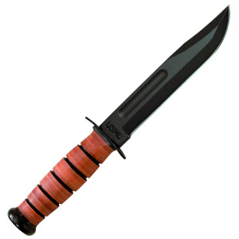

1. Binoculars. Years ago (decades, actually) I was given a pair of World War II U.S. Navy 7x50 "night binoculars" by a veteran of the War in the Pacific. They are marked "US NAVY BU SHIPS MARK 32 MOD. 7 237687-1943 ANCHOR OPTICAL CORPORATION NEW YORK, N.Y." These gather an incredible amount of light and probably represent the acme of American traditional optics. They have served me well over the years, being toted from militia FTXs to recon operations of neo-Nazi terrorist-wannabes in the 90s to college soccer games. Each eyepiece is individually focusable. Here's a closer look at a similar pair.

They are by modern tactical standards too heavy, too fragile and frankly a museum piece that I ought to retire to my personal collection of relics from campaigns past.
Can some Irregular (or two or three) send in their own experiences with modern tactical binoculars? Which are best? Which are the best trade-off between price and quality? Please deal with field tips for maintenance, how best to locate them on a LBV, etc.


USMC KaBar2. Combat knives.
Early in my misspent youth I carried a Vietnam bring-back Gerber Mark I combat dagger in a rig under my coat. Later, I sold it for a ridiculously low price to a buddy and picked up a Mark II like this one.
Gerber Mark II

Now one of the problems with combat daggers is that you can beak the point off distressingly easy when you are using them. I discovered that one balmy afternoon back in the late 70s when I was working store security for Woolco on the south side of Columbus OH. (There's a question that you can date somebody with. Who here remembers Woolco?) I was attempting to persuade a shoplifter to cease pulling out of the parking lot by carving on the sidewall of his car's front tire when the Gerber's point broke off, leaving it and me in a cloud of dust as he sped away. (The story had a happy ending. His madly-deflating tire only got him ten blocks where he was picked up by CPD.)
Anyway, I had the point reground and sharpened, but I later came to favor the Marine KaBar for an all-purpose knife for militia FTXs and camping.
However, for Christmas, my son Matt got me one of these:
MOD Beshara XSF-1 Dagger

When I slid it out of the sheath, I thought, "Darn, the point's broken off." It isn't. Brent Beshara, a former Canadian special operations soldeir, designed it that way and the knife's partisans call it "the ultimate evolution of the combat dagger." It has a unique triple-edged point design eliminating the tip weakness found on traditional combat daggers while still providing great penetrating power.
It is precision machined from either tough A-2 tool steel (Diamond Black DLC coated) or solid 6 AL/4V titanium (matte bead blasted) -- I have the steel version. It has contoured handle slabs and an integral double guard for a positive grip when dry, although I want the Trainer to examine it to see how we might make the grip even more positive when in use (there is nothing slicker than blood on an unprepared knife grip). I must say that I am impressed by the design (although I doubt I'll be using it in extremis any time soon).
The edge as it came from the factory is dull and the techniques used to sharpen it are somewhat different than a standard blade. Lacking time, patience and expertise, I will probably just send it back to have a factory killing edge put on it.
I'd be interested to know what experiences folks have had with the XSF-1 in particular, but the praxis responses should cover combat knives for militia use in general.
Malcolm X, his carbine and two thirty-rounders taped together.

3. Thor Defense Multiple-Magazine Holder
Years ago, at the height of what I now call "my Benedict Arnold period," I used to carry a sawed-off M-2 carbine with two "jungle clips" as they were called taped together a la Malcolm X in the photo above. A real Symbionese Liberation Army kind of thing. Of course that's fine for robbing a bank, I suppose (not that I ever got around to robbing banks), but how do you get close to the ground with such a thing? Answer: you can't. The other problem is that you can't keep dirt out of the mouth of the upside down magazine, although the Army procured rubber M-1 Carbine magazine covers for that purpose.
Carbine magazine dust covers.

The problem is that such a dust cover (while certainly protecting the magazine and ammo) is cumbersome to use and thus anybody going into harms' way is going to remove it, losing it or discarding it deliberately.
American GI's have been taping magazines to achieve greater firepower positioned at the ready since at least WWII and the M-1 Carbine's 15 rounders. Of course the problem comes when you empty the second one and have to put the empty somewhere. GI's in a hurry would simply dump the lash-up and get two more from the supply sergeant -- not an option open to us poor militiafolk without a taxpayer funded logistical tail.
Still, the idea must have some continuing allure because the U.S. military is procuring these:
National Stock Number 1005-01-562-9455, the Thor Defense Multiple-Magazine Holder for M-16A2 Rifles and M-4 Carbines.

This item, a kit really, consists of an accessory clamp, a Magpul magazine pull tab, a clear dust cover and an ACU pouch big enough to accept the assembly when empty (although with the clamp sticking out on the sides and hanging up on the fabric it is problematic getting the assembly in and out of the pouch). Here is what it looks like assembled (although in this pic someone has added a superfluous Magpul on the second mag):

So, my question is: Are there any Irregulars out there having experiences with these things? If so, how do you rate them?
17 comments:
http://www.blueforcegear.com/product.cfm?type=cat&cat_id=1&prod_id=91
The redi-mod has a higher utility.
-it protects the second magazine's feed lips and ammo from dirt and impact
-it attaches the second magazine to the rifle rather than the magazine in the gun, such that if you for some reason need to do a speed reload and you are not able to stow the empty you do not lose two empty magazines, you lose one.
-it allows you to perform administrative reloads to the redi-mod if there is a lull in the gunfight. If the magazines are attached you're gonna have two mags until you're done with one of 'em, then you've got one mag and a dead weight on the other side.
(continued)
Awareness and keeping a distance is the most crucial thing here. This particular thug on this morning's train bragged about how he liked to snug up next to an unsuspecting student and comment about how he likes the subject too, and suddenly deliver a knockout blow. When you know that a stranger is up to no good, and there are many obvious clues, maintain at least an arm's length of distance from them, and it gives you the option of seeing something coming. Secondly, some of these thugs love to go in pairs or small groups, and when one of them is talking to you, the others will be trying to spread out to form a "net" around you.
When an attack do come, it usually happens in lightning-fast speeds. You will get a chance to counter only if you were able to maintain at least a lowest degree of awareness in the seconds before the attack, when the thugs are trying to analyze you.
When dealing with dangerous sucker attacks, one's instincts, if he gets time to counterattack, is to throw a punch back. HOWEVER, punches are extremely hard to focus properly, especially on a target who is trying to catch you by surprise, and is already moving and dodging. A punching move, reinforced with a cold steel blade in front of it, is another story.
The most common wisdom about knives is that no matter what you do to take away an opponent's blade or take him down, you will get cut and stabbed, and most likely, fatally. An M3 style fighting knife allows the blade to be held foward like a sword, for thrusting like a sword, or held in a backhand fashion, therefore, allowing each hand to be equipped with one. M3 style knives are also the most easy to deploy. I have tired fast-unsheathing techniques with both Gurkha kukris and curved Mongolian fighting daggers, but the straight bladed US Army fighting knife proves to be the most easy to deploy and use with telling effect.
This is a great post since I was wonder the same and am looking forward to the responses. I would specifically like to know about the combat knives and optics.
What is the best combat scope for the M1A? I am thinking about a TA648MGO-308 (6X). I am near sighted and wonder if this is enough power for 400 to 500 yard shots.
Also, has any one compared the M1A and Rock River RRA LAR-8 in the .308 20" barrel. I know it gives up 2" in barrel length compared to the M1A but how big of a difference will that make in range and terminal energy?
Thanks,
Larry
III
Prefered Optics: BUSHNELL H20 WATERPROOF BINOCULARS (8 X 25mm) - About $40. Small, waterproof, fog proof, rubber armored, and the magnification is just about right. Small enough for an external pouch on the LBE/LBV, or if wearing a LBV, slip inside one of the internal pockets. External pockets on a M-65 type jacket or BDU top also work well. When coupled with proper night vision adaptation skills, target acquisition is very, very good.
Locking/Taping Mags together: BAD idea! The tried and true method of single magazines for designed loads (20 to 30 rounds per mag) ensures optimum performance in a bad situation. The additional weight of the loaded mag taped or locked onto the inserted mag could, depending on the free play of the magazine locking device, put just enough space between the bolt and top round in the inserted mag to cause a failure to feed, among other things…Believe it or not, you can learn/teach others to count rounds so they are pretty sure of how much remains in the mag. Add in the practice of loading one less round than full capacity to ensure the mag spring is not over-compressed when inserting a full mag into the well of a rifle with the bolt closed. These, coupled with the time-tested practice always replacing a partially loaded mag with a full one during any lull and then topping off the partial mag as circumstances allow is a lot more ‘sure fire’ (pun intended) than the practice of locking/taping mags together for the following reason: Psychologically, the shooter will tend not concern himself with fire discipline because of the false sense of security provided by having so many rounds at his disposal. Additionally, ‘murphy’s law’ will come into play, and that bottom mag’s feed lips will get bent, mud will get caked on top of the rounds, or something else will happen when the shooter least expects it. Sure, you can put a rubber cap on the bottom mag, but that negates the purpose of having two readily available mags in the first place. So why do it?
FWIW, folks who are seriously training need to keep it simple, keep it effective, and not fall into the trap of ‘reinventing the wheel’. Repetitive practice with the chose platform is what makes the shooter accurate, smooth, and fast.
Getting threepers to the necessary level of skill mastery is hard enough without adding 'gucci gear'.
Try herding cats....it's similar!
For binocs, I generally use the small, 'pocket sized' versions - 8x20 usually, not very good optics, but light enough that I actually keep them in my LBE (I use 20-round M16 mag pouches as utility cases, if nothing else is around). When hunting I have a pair of Steiner 8x30's that are small and light enough that carrying them isn't too bad, but they don't get as much light as 7x50's would.
The pocket binocs are similar to these: http://www.cabelas.com/cabelas/en/templates/links/link.jsp?id=0004196711255a&type=product&cmCat=SEARCH_all_NYR&returnPage=search-results1.jsp&nyr=1&Ne=46&Ntk=Products&QueryText=binoculars&sort=all&Go.y=0&N=47&Nty=1&hasJS=true&_dyncharset=ISO-8859-1&_DARGS=%2Fcabelas%2Fen%2Fcommon%2Fsearch%2Fsearch-box.jsp.form23&Go.x=0
The 8x30's are these: http://www.cabelas.com/cabelas/en/templates/links/link.jsp?id=0039141712425a&type=product&cmCat=SEARCH_all_NYR&returnPage=search-results1.jsp&nyr=1&Ne=3&Ntk=Products&QueryText=binoculars&sort=all&Go.y=12&N=8092&Nty=1&hasJS=true&_dyncharset=ISO-8859-1&_DARGS=%2Fcabelas%2Fen%2Fcommon%2Fsearch%2Fsearch-box.jsp.form23&Go.x=21
I've found that with binocs, good usually (but not always) means expensive. I've tried bargain priced big binocs, and they're cheap, but not very good - on the other hand I don't see much difference in a $300 pair of good binocs and a $1200 pair (unless they're image stabilized).
When I need serious binocs, I have some Steiner Military 7x50 M22's, with the military graticule that I keep in the vehicles. I'm tempted to invest in some with a built in compass, however - when I want to point out a feature to someone else trying to talk them onto it can be hard, a compass would at least get them pointing in the right direction.
On the boat I use West Marine binocs for everyday (they were rated quite highly), and am satisfied with them - especially the price. The bright color isn't very tactical, though:
http://www.westmarine.com/webapp/wcs/stores/servlet/producte/10001/-1/10001/66644/377%20710%201351/0//Primary%20Search/mode%20matchallpartial/0/0?N=377%20710%201351&Ne=0&Ntt=&Ntx=mode%20matchallpartial&page=CategoryDisplayLevel1&isLTokenURL=true
And for special purposes, I have binoc/laser rangefinder combos, and stabilized binocs that allow much greater magnifications (14x) than regular hand-helds:
http://www.westmarine.com/webapp/wcs/stores/servlet/producte/10001/-1/10001/19589/377%20710%201351/0//Primary%20Search/mode%20matchallpartial/0/WMPrice|1?N=377%20710%201351&Ne=0&Ntt=&Ntx=mode%20matchallpartial&page=CategoryDisplayLevel1&isLTokenURL=true&storeNum=5003&subdeptNum=14&classNum=12400
And while they stay on my deck at home (so I can observe the wildlife) I have a pair of Soviet ship binocs on a tripod (like these) http://www.russianoptics.com/binoc301.html, if there was need they could be moved to a better location.
http://www.nikonhunting.com/binoculars-monarch-x-monarch-x-85x45.html
these are pretty hotel sierra.
My favorite "dirty fighting" knife-of-choice (since Brooklyn) is a Navy Kabar by Camillus that was once strapped to my cousin's hip when he abandoned the Yorktown.
Unbelievable edge.
BTW, Malcolm X was a convicted felon at the time of this photo.
I sure did'nt see any prosecuters line up to charge him? Or go after him.
Sure, but you can retain a magazine with the time you lost taking the rifle out of the pocket of your shoulder to get the second mag attached to your rifle.
I'll leave that to the gear queers. I'd rather spend the $175 on buying 2 extra mags to carry and put in a couple extra minutes of PT to get used to the added weight.
But hey, to each their own.
Knives --- The "Kabar" (old USN Mark-2) has way more utility than the Gerber dagger. Gerber recently started making the dagger again with slight changes. Kabar (the company) makes both old and new versions of the ubiquitous combat knife.
But you can do way better. Take a look at Bark River Knife and Tool, especially the Bravo-1 and Bravo-2 knives.
"This knife was developed with the assistance of the Training Unit of the Force Recon of the U.S. Marine Corp. These folks Bought a large number of knives on the Commercial market and tested them without saying anything to any of the makers.
The Bark River Gameskeeper came out on Top to Fit their Requirements of a Real Time General Purpose Survival/Bushcraft Knife.
We were Contacted by them and were asked to make a knife based on the Gameskeeper with a Few Changes.
The Bravo-1 is the Result of their Input."
These are semi-custom knives made by Americans who REALLY know and use their knives. They are guaranteed and so popular that they are sold out. But Bark River is making more.
http://www.knifeforums.com/forums/showtopic.php?tid/821690/
My binocs of preference for fixed positions: my Zeiss 10x50s that I scored in East Berlin for the equivalent of about 10 bucks. The eyepieces are individually adjustable, and my myopic self can even see through them without glasses. They're also big and heavy, hence my preference for leaving them on static posts.
Not a big knife guy; I have my bayonet from days past and that's about it.
I don't do the taping mags together thing. How the heck are you supposed to go prone with the equivalent of a 50 rounder in your weapon? I don't even like 30 rounders for that reason, but I'll use them if I have to....
The Glock military knife is an absolutely great balance of light weight, ability to take and hold a fine edge which is easily restored, and general utility. The double milled saw is actually useful and not for show. It is as ugly as a mud fence, totally utilitarian, and reasonably priced. I have had mine for over 20 years and have not found a better general purpose knife.
I use a Redi-Mag with an extended bolt catch release on my AR. (www.redi-mag.com) It protects the spare magazine and prevents the top round from creeping forward under recoil. The spare magazine has an independent release lever, operated by the thumb of the left hand as the mag is grasped. Disadvantage: It is possible for an uncoordinated shooter to dump both magazines on the ground, but that's what training is for. Also, if you use a .22 adapter in your AR, the 22 mags won't fit in the Redi-Mag because they are too tall to lock in properly.
I have not yet found a similar solution for my FAL, PTR91, or my AK.
Can't help with knives or binoculars, but I'm really interested in the results.
"The Trainer said... Locking/Taping Mags together: BAD idea!"
Agreed. The simple fact Malcom X is shown with such a thing should tell you something... Learn to shoot, learn to think and stay calm, and leave the selector switch on single fire or three round burst. Better yet, forget assault rifles and stick to your Model 70, or any other good American made hunting rifle with a good scope; keep a nice shot gun in reserve, and model 1911 on your hip. If you are really going to insist on having a large magazine reserve then pick your self up a Thompson, they are actually pretty nice and that drum magazine should hold enough for ya...
btw: regarding comments about long magazines preventing you from getting close to the ground, you can extend the concept as an argument against all post WW-II so called advances in assault rifle design, especially the idiotic idea of putting a real pistol grip on a rifle. The relationship between a shooter and his rifle is one of the soul and body - ergonomics is the term for the latter. The rifle becomes an extension of your body and the modified pistol grip used on most hunting rifles aids this wonderfully. You can grab it without looking and it comes automatically to firing position; you can carry it all day long without even thinking about it. But replace that natural design with these cursed full pistol grips and the rifle becomes a mutant. You can not just grab it and throw it up to your shoulder to fire; you can no longer carry it ready to fire for very long because your wrist is cocked and under constant strain that after awhile induces fatigue. There is nothing more sorry looking - or stupid looking for that matter, then a supposedly professional trooper going tippy-toe down a road grasping that moronic pistol grip and the stock waving around his ear. Wait, yes there is: that's the fool that grabs his M16 by that most glorious of all advancements in modern assault rifle design - the carrying handle. And talk about getting your head a long ways from the ground: use a 30 round mag and put a scope on that infernal handle... God Bless you Mr. Stoner - if you don't burn in hell for all the troops that died trying to clear a jam from one of your sorry designs, you should for that asinine idea alone.
Knives: A team mate of mine in the 6th had to use his knife on his last mission with SOG, they were being hunted by a battalion or so and had gone to ground when there were no escape routes left. He was hiding in some brush and one of the searcher stumbled upon him so he put his knife in the guy's throat so he couldn't make any noise. It worked, and they eventually got themselves out of the area and extracted. However, and this is something you all should consider, he couldn't go back because he couldn't get the picture of the guy's face out of his mind. He wasn't a coward, nor a mamma's boy - he had lots of willy-peter scars on his ass from tossing grenades down between his legs as they ran up the mountain slopes away from the hunter teams sent to capture them alive; but knives are up close and personal and using them can play with your mind afterwards. He was later part of the Son Tay raid, so you can get over it, but just keep in mind what it is all about.
bacsi
i have tried the blackhawk magazine coupler, and it solves the problem of sharp edges that get stuck on things by not having any. it's a low profile, lightweight hunk of tough plastic. warm it up with a blow dryer just a little and it'll take, at which point it's hard to knock loose.
like the mafia selling you both protection and protection insurance, blackhawk also makes a 2-mag pouch ever so slightly larger than what is normally necessary, to accomodate a pair of mags in a coupler, either this one or the magpul version (both upside down, i imagine). do not think for one minute these items are anything but tacticool (note that even in this picture, he ain't got one, and they didn't add one with photoshop.)
the coupler has a metal cap you slide into the stand-by mag like it was another round, which (mostly) protects the top round from dirt and damage, and keeps the feed lips in place. i believe this also steals a round from you, unless you have the lower quality followers (like me) which will let you compress the spring a little more (you probably shouldn't).
the cap is attached to the coupler by an extremely unfortunate rubber band, which bounces around once its time to pop the cap and make the switch. sliding the cap out probably dislocates the top round nine times out of ten, especially now that you've charged with only 28 or 29, so it's better to just cut the elastic off of this hideous contraption.
i'll say this: it's a fun toy and it turns heads at the range. i get a lot of stares from LEOs who either 1) know it's an absolutely piece of junk, or 2) are somewhat intimidated by a crazy-looking young guy, and thinking maybe they should go outside and case the parking lot to figure out which car is mine (it's the one from out-of-state, sir (say, nice laws you got here)).
aside from that, everything else the trainer had to say about couplers in general is surely true of this one as well. i don't leave any precious magazines in it. i dunno, if you take it into the field, maybe you could throw it at the enemy.
As far as knives go, I don't get the whole 'custom knife' thing...they're a tool (probably the second tool man ever invented, after pounding with a rock), and while I appreciate fine tools the idea of spending upwards of $100 for one doesn't really appeal to me - in fact I'd no sooner spend $200 (or more) on a knife than I would a plain screwdriver. I appreciate artisanship, but for crying out loud, they're a piece of steel with a freaking handle riveted on, not the holy grail... And yes, I've made my own (from a leaf spring) so I appreciate the work that goes into shaping steel.
Having said that, I have a collection of just about every Gerber Mk I and II series made - including the fairly rare stainless/orange handled 'dive knife'. I take them out of storage once or twice a year and make sure they're OK. A bunch of folders, including some nice production knives..
For everyday, I have a leatherman micra on my keychain, and a leatherman Wave in my bag...I carry a multi-tool on my LBE (usually a Wave or Crunch), and bayonet appropriate for the long gun I'm carrying, and for serious uses have a Cold Steel SRK. I have a Gerber multitool in my aid bag (field dentistry) and I also carry a Kukri and shovel, but those are more for camp chores than the final defensive line.
No doubt those more experienced in silent elimination of enemies have their preferences, but my preference is to eliminate my enemy from 400 meters or more.
Gerber LMF II Infantry Knife
http://www.amazon.com/gp/product/B0009JVOCA/ref=pd_lpo_k2_dp_sr_1?pf_rd_p=486539851&pf_rd_s=lpo-top-stripe-1&pf_rd_t=201&pf_rd_i=B000E3QUB6&pf_rd_m=ATVPDKIKX0DER&pf_rd_r=1FZ4KN06VP4JKB1E60FS
I have this knife, and it seems to do the job......
For Binos the 8x25 H20 fro Bushnell seem the ticket, light and waterproof, I have an older version and really like them
Red-Mag or nothing, the jungle clip thingy, is a no go.
Post a Comment